Bolly Kombat — Bollywood Superhero Fighting Game
A free, Mortal Kombat-style fighting game where 11 Bollywood heroes and villains battle it out — and shout their most iconic filmy dialogues when they land a hard hit.
▶ Play now — free in your browserAbout the game
Bolly Kombat is a fan-made parody fighting game. Pick G.ONE, RA.ONE, KRRISH, FLYING JATT, CHITTI, SHAKTIMAAN, MR. INDIA, SINGHAM, CHULBUL PANDEY or GABBAR SINGH, then fight through an arcade ladder to Mogambo, or challenge a friend on the same keyboard.
- 92 filmy dialogues — from “Bade bade deshon mein…” to “Kitne aadmi the?” — spoken aloud in Hindi.
- Specials, superstar moves and fatalities for every character, called “PACKUP”.
- Bollywood-style announcer: “Lights… Camera… ACTION!”, “KHATAM KARO ISKO!”, and hits that go “DHISHOOM!”.
- 4 stages and a dhol-and-tabla soundtrack.
Characters (11 fighters)
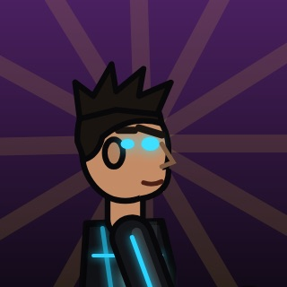
G.ONE
King of Romance, now King of Combat. Opens his arms before every punch.
Look: Skin-tight matte black bodysuit; Glowing electric-blue circuit lines running down chest, arms and legs; Blue power core glowing in the chest; Black gloves and boots, slick spiky dark hair; Eyes glow blue in power mode.
Moves: Plasma Ball (special) · H.A.R.T. Blaster (superstar move) · Naam Toh Suna Hoga (fatality)
“Bade bade deshon mein aisi chhoti chhoti baatein hoti rehti hain, Senorita!” — Dilwale Dulhania Le Jayenge (1995)
“Hum ek baar jeete hain, ek baar marte hain... aur maar bhi ek hi baar padti hai!” — Kuch Kuch Hota Hai (twisted) (1998)
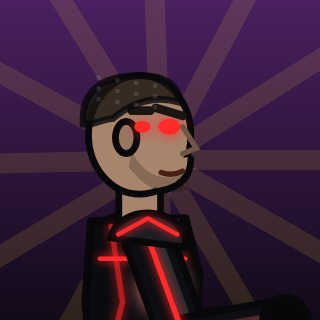
RA.ONE
Modern-day Raavan with ten forms. Breaks into cubes, rebuilds himself, and is very angry about it.
Look: Black armoured bodysuit with glowing RED circuit lines (G.One's evil mirror); Glowing red H.A.R.T. core in the chest; Armoured black shoulder plates; Near-shaved buzz-cut head, stubble, red glowing eyes.
Moves: Cube Teleport (special) · Dus Sar Ka Raavan (superstar move) · Game Over (fatality)
“Main Ra.One hoon. Mujhe koi nahi maar sakta... game ka rule hai.” — Parody (Ra.One)
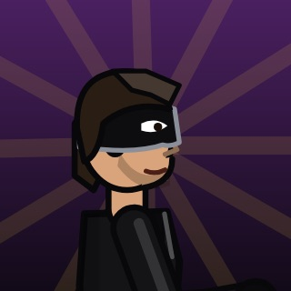
KRRISH
Six-pack, six fingers on one hand, and one long black coat.
Look: Black mask covering eyes and upper face, silver edge; Long black leather trench coat; Black shirt, black trousers, black gloves and boots; Medium-length brown-black hair on top of the mask.
Moves: Jaadoo Dash (special) · Krrish Rush (superstar move) · Kaho Naa... Dance Hai (fatality)
“Vijay Dinanath Chauhan... poora naam!” — Agneepath (2012)
“Raja ka beta raja nahi banega... raja wahi banega jo haqdaar hoga!” — Super 30 (2019)
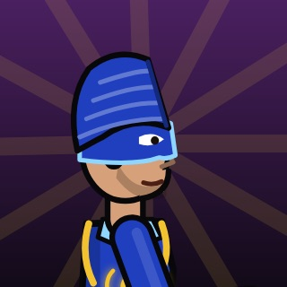
FLYING JATT
Can fly. Is scared of heights. Still has to buy do kilo lauki on the way home.
Look: Royal-blue superhero suit with gold piping on the shoulders; Golden khanda emblem on the chest, light-blue collar; Blue turban (patka) and blue eye-mask; Black belt with a big gold buckle, blue coat-tails at the back; White boots with black criss-cross laces.
Moves: Flying Kick (special) · Antariksh Dhulai (superstar move) · Pollution-Free Zone (fatality)
“Chhoti bachchi ho kya?” — Heropanti (2014)
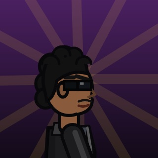
CHITTI
Does not dodge bullets. Bullets dodge him. Shows metal skin when damaged.
Look: Black leather jacket over dark shirt, black trousers; Signature black sunglasses; Thick wavy black hair; Silver robotic endoskeleton visible through the face when damaged (red eye).
Moves: Magnet Bolts (special) · Chitti Army (superstar move) · Ctrl + Alt + Delete (fatality)
“Hi! Main hoon Chitti, the Robot. Speed 1 terahertz, memory 1 zettabyte.” — Robot (2010)
“Main ek baar bolta hoon, toh sau baar bolne ke barabar hai!” — Baashha (Hindi dub) (1995)
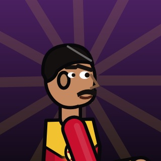
SHAKTIMAAN
India's first desi superhero. Spins. Lectures. Spins again.
Look: Red full bodysuit; Golden chest yoke with a sun/chakra emblem; Golden belt, golden arm bands and golden boots trim; Neatly parted black hair and thick moustache.
Moves: Shakti Spin (special) · Om Tornado (superstar move) · Sorry Shaktimaan (fatality)
“Om... Shaktimaan!” — Shaktimaan (transformation) (1997)
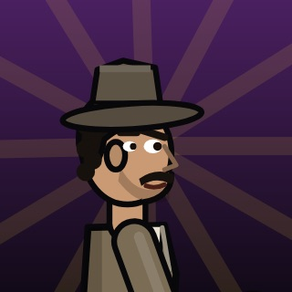
MR. INDIA
You can't see him. You can only see the red light. Then you see stars.
Look: Grey-brown fedora hat; Long belted trench coat; Shirt and trousers underneath; Iconic thick moustache; Red light visible when invisible.
Moves: Gayab! (special) · Invisible Dhulai (superstar move) · Mr. India Ne Gayab Kar Diya (fatality)
“Control Uday, control!” — Welcome (2007)
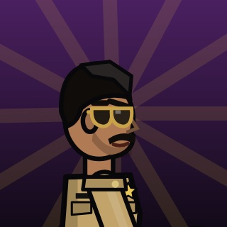
SINGHAM
Roars before he punches. Arrives by flipping jeep. Never removes the aviators.
Look: Khaki police uniform shirt with shoulder epaulettes and stars; Khaki trousers, brown leather belt with brass buckle; Gold-frame aviator sunglasses; Thick moustache, police badge and name plate.
Moves: Satakli Shockwave (special) · Jeep Entry (superstar move) · Arrest Warrant (fatality)
“Aata majhi satakli!” — Singham (2011)
“2 aur 3 October ko hum Panjim gaye the... satsang ke liye.” — Drishyam (2015)
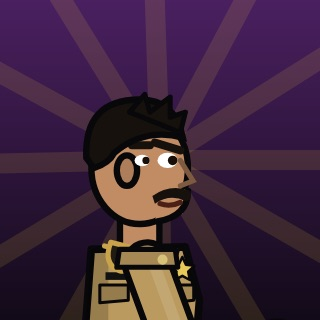
CHULBUL PANDEY
Wears his sunglasses on the back of his collar. Nobody knows why. Nobody asks.
Look: Khaki police uniform, sleeves slightly rolled; Aviator sunglasses hanging on the BACK of the shirt collar; Thick moustache, short spiky hair; Big belt buckle, red handkerchief.
Moves: Boomerang Chashma (special) · Thappad Express (superstar move) · Dabangg Thappad (fatality)
“Hum tum mein itne chhed karenge, ki confuse ho jaoge ki saans kahan se le aur paade kahan se!” — Dabangg (2010)
“Swagat nahi karoge hamara?” — Dabangg 2 (2012)
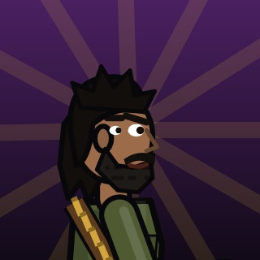
GABBAR SINGH
Chews tobacco. Asks how many men there were. Every single time.
Look: Faded olive army fatigues; Brown leather ammunition bandolier across the chest; Scruffy black beard, messy shoulder-length hair; Stained teeth, heavy boots.
Moves: Kitne Aadmi The (Pistol) (special) · Chhe Goliyan (superstar move) · Yeh Haath Humko De De (fatality)
“Kitne aadmi the?” — Sholay (1975)
“Jo darr gaya... samjho mar gaya!” — Sholay (1975)
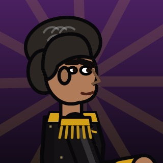
MOGAMBO Final boss
Final boss. Very easy to please (just lose to him).
Look: Shiny black ceremonial costume with gold trims; Huge golden shoulder epaulettes; Maroon-lined black cape; Puffed-up wild grey-black hair, fierce eyebrows and kohl-lined eyes.
Moves: Acid Toss (special) · Acid Ray (superstar move) · Acid Ka Kund (fatality)
“Mogambo khush hua!” — Mr. India (1987)
“Jaa Simran jaa... jee le apni zindagi!” — Dilwale Dulhania Le Jayenge (1995)
How to play
| Action | Player 1 | Player 2 |
|---|---|---|
| Move / jump / crouch | A D / W / S | ← → / ↑ / ↓ |
| Punch | F | J |
| Kick | G | K |
| Special move | H | L |
| Block (add down for a low block) | R | I |
| Superstar move (when the meter is full) | T | O |
| Pause | Esc or P | |
Combos: Punch, Punch, Kick for a 3-hit combo · Down + Kick to sweep · Jump + Kick for a flying kick. In 1-player Arcade mode the arrow keys and J K L also work.
Stages
- Marine Drive, Mumbai — Night — Queen's Necklace lights
- Ramgarh (Sholay) — Sunset — rocks, dust & the famous water tanki
- Film City Studio — Shooting in progress — fake Switzerland backdrop
- Mogambo's Lair — Underground — acid pool & HAIL MOGAMBO banners
FAQ
Is Bolly Kombat free to play?
Yes. It runs in your web browser with nothing to download or install, and there are no accounts or ads.
Can I play with a friend?
Yes. Versus mode lets two players fight on one keyboard. Arcade mode pits you against the computer, ending with Mogambo as the final boss.
Does it work on phones?
Not yet. Bolly Kombat needs a keyboard, so play it on a laptop or desktop computer.
Are the dialogues real?
The game has 92 dialogues. Lines marked as film quotes come from the movies they credit; the others are new parody jokes written in each character's style. Each line's source is shown in the speech bubble.
How do I do a fatality?
Win the final round. When the announcer shouts “KHATAM KARO ISKO!”, walk up to your dizzy opponent and press the Super key (T for player 1) or Special — then it’s “PACKUP!”.
Why can’t I hear the dialogues?
Click or press any key once to unlock sound — browsers block audio until you interact with the page. Voices use your browser’s text-to-speech, with a Hindi voice where one is installed.
Bolly Kombat is an unofficial, non-commercial fan parody. It is not affiliated with or endorsed by any actor, film, studio or broadcaster. Characters are original cartoon drawings made in code; film titles, character names and quoted dialogues belong to their respective owners.